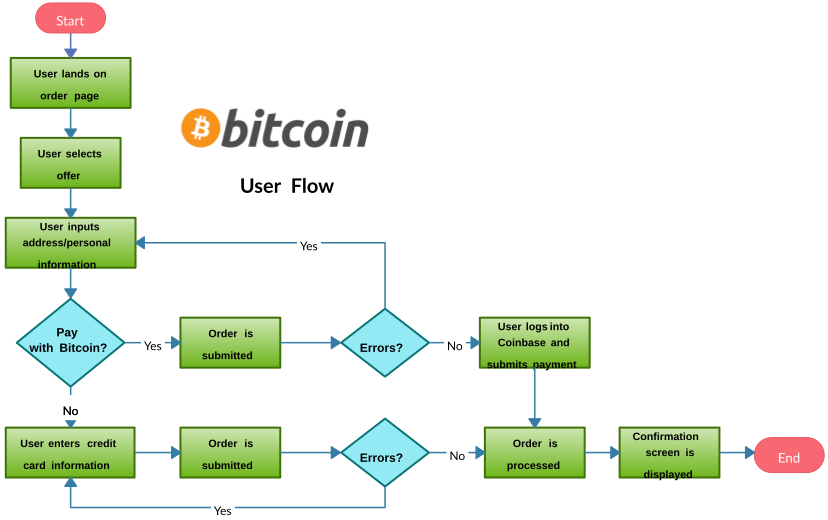

Flowchart on graafiline esitus algoritmist või samm-sammulisest töövoost. UML kontekstis on selle vasteks Activity Diagram, mida kasutatakse protsessi loogika kirjeldamiseks.
| Kujund | Nimi | Tähendus |
|---|---|---|
| Ovaal | Terminal | Protsessi algus või lõpp. |
| Ristkülik | Protsess | Tegevus või operatsioon. |
| Romb | Otsus | Küsimus (Jah/Ei valik), mis suunab voogu. |
| Rööpkülik | I/O | Andmete sisestamine või väljastamine. |
Kasutasime seda skeemi Bitcoin kalkulaatori loogika planeerimiseks: kasutaja sisend -> päring -> arvutus -> väljund.
